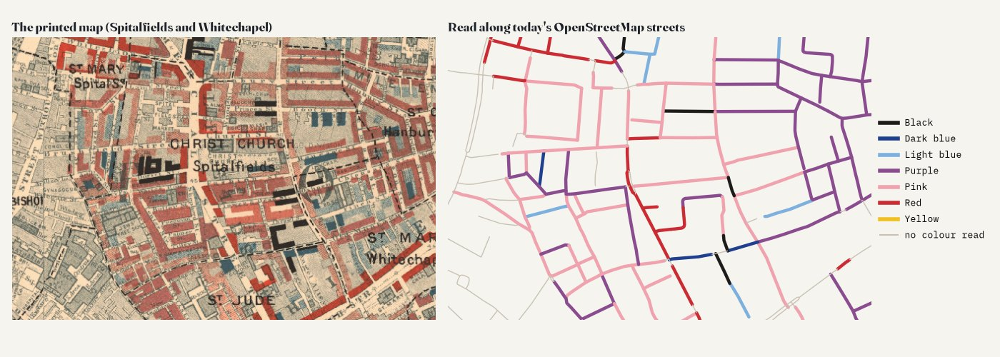
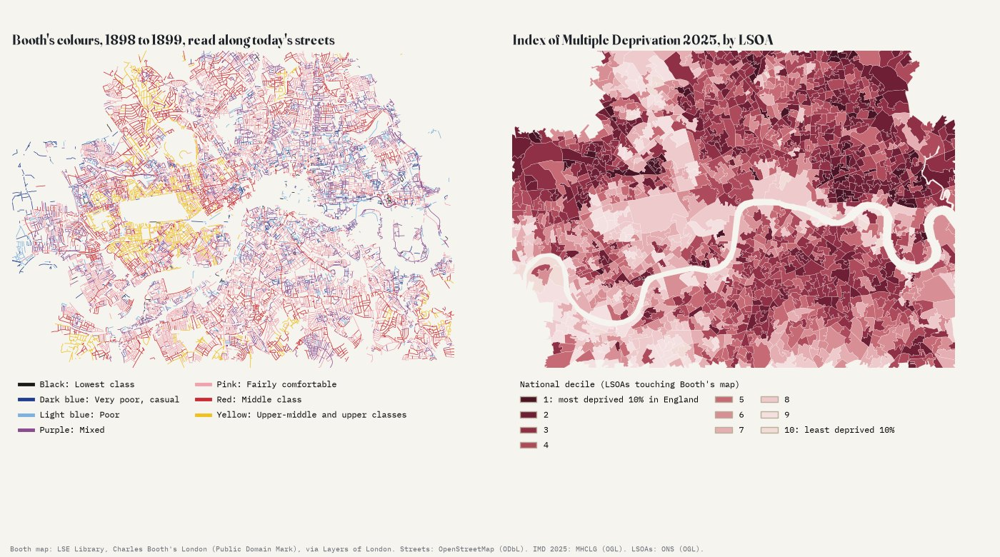
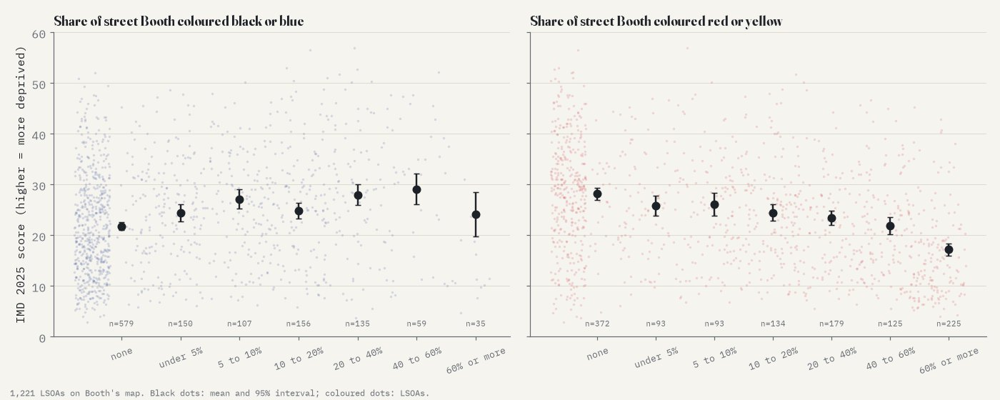
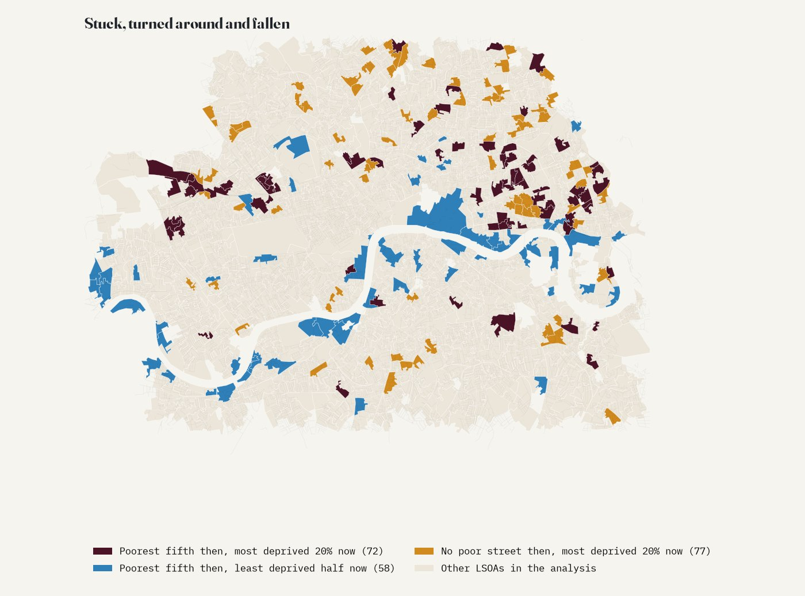
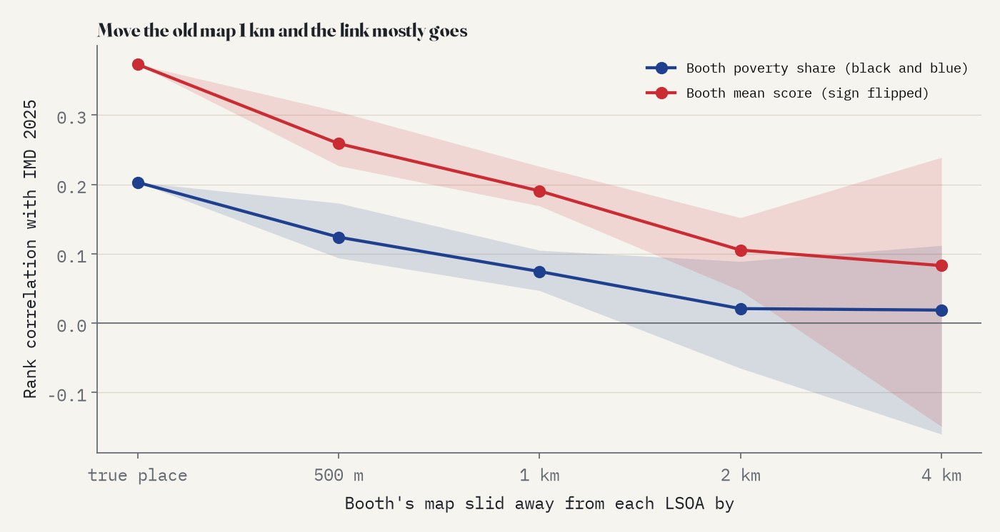

Charles Booth's colours of 1898 to 1899 read along every street of today's inner London, against deprivation in 2025. Slide between then and now; tap a street or an area.
Booth's 1898 to 1899 map covers inner London only: from Hammersmith to Greenwich, Hampstead to Brixton. Streets are coloured only where they lie on the map and the colour could be read. The thin brown outline marks the 1,221 areas analysed.
In 1898 and 1899 Charles Booth's investigators walked inner London street by street and coloured every one on a map: black and dark blue for the poorest, light blue for the poor, purple for mixed streets, then pink, red and yellow up to the wealthy. A century and a quarter later, London has been bombed, cleared, rebuilt and gentrified. Are the streets Booth coloured poor still the poorer places today?
The short answer is: a little, and very locally. Small areas where more of the street length was black or blue in 1899 are, on average, somewhat more deprived today (Spearman's rho 0.20, 95% interval 0.13 to 0.27). The link is clearer at the wealthy end of Booth's scale than at the poor end, it holds north of the Thames but is not distinguishable from zero south of it, and it is a street-level fact: shift the old map a kilometre and most of it disappears.
The page uses the georeferenced scan of Booth's 1898 to 1899 map published by LSE Library and served by Layers of London. Booth coloured the house frontages, not the road, so for each of today's OpenStreetMap streets on the map I read the colour of the paper 7 to 16 m either side of the centreline, every 4.5 m, pooled the ink along the street and gave it the colour that dominated. 19,916 street pieces (2,380 km) got a colour; the rest run through parks, railways, docks and blank ground, or were built after 1899.

A computer reading a scan makes mistakes, so I checked it. On a fresh random sample of 200 coloured streets, labelled by eye from magnified crops without seeing the answer (the labels were made by an AI model, Claude, not by a person), the reading matched 73% of the 177 that could be judged, and was within one step of Booth's seven-step scale for 93%. It never called a comfortable street poor, but it missed some poor ones, mostly streets Booth coloured partly light blue and partly purple, which it read as purple. That kind of error blurs the comparison and makes any link look weaker than it is.

Of the street length with a colour, 9.7% is black, dark blue or light blue, 23.2% purple and the rest pink, red or yellow. Each of the 1,221 small areas (LSOAs, about 1,750 people each on average) that sit on the map gets a Booth poverty share: the share of its coloured street length in the three poor colours.

Within the same borough, an area whose streets were all black or blue scores about 6.9 points higher on the 2025 Index of Multiple Deprivation than one with none: 0.69 points for every 10 percentage points of Booth poverty (95% interval 0.18 to 1.20). That is real but modest: about 0.63 of a standard deviation of today's scores. The other end of the scale says more. In an exploratory check added after the main result, areas where much of the street was red or yellow in 1899 are clearly less deprived now (rho -0.36), and the mean of Booth's seven-step score correlates with deprivation at -0.37. Wealth seems to have stayed put more than poverty has, a lead to test rather than a finding.

Of the fifth of areas with the most poor street on Booth's map, 72 are in the most deprived fifth of England today: 32 of them are in Tower Hamlets (around Bethnal Green, Bow Common and Limehouse), others around Lisson Grove and Kensal Town. 58 have turned around and sit in the less deprived half of England: many lie along the river, around Rotherhithe, Nine Elms, Sands End and Putney, where docks and wharves once stood. And 77 areas where Booth coloured no street poor at all are among England's most deprived fifth now, 39 of them in Hackney, Islington and Camden.
The analysis was pre-specified in a written plan before the deprivation data were joined to the Booth measure. The link survives most of the planned checks: counting purple as poor (rho 0.33), using map area rather than streets, keeping only the cleanest readings, a stricter sample, the income part of the index, and dropping any one borough (rho 0.17 to 0.21). Allowing for the strong clustering of both maps in a spatial model shrinks the within-borough slope to 0.40 (interval 0.07 to 0.74). South of the Thames alone the correlation is 0.09 (interval -0.03 to 0.21): no clear link there.

The most telling check moves the old map. If each area is compared with Booth's colours 500 m away, the correlation drops to 0.12 on average; at 1 km to 0.07; at 2 km to 0.02. So this is not just "the East End was poor and still is". What persists is the local pattern: this side of the main road or that, this block or the next.
This is a comparison of places, not of families: almost no one living on these streets today descends from the people Booth's visitors described. It cannot say why some streets stayed poor; council building, the Blitz, slum clearance, the docks and housing markets all sit between the two maps. Booth's colours were judgements by his investigators, and the 2025 index is a relative ranking built from 2020s data. The colour reading is imperfect (see above), and the map only covers inner London.